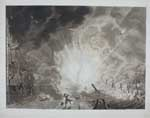

‘Ô bloem der steden’. Bilderdijk en Leiden
Samenstelling: Rick Honings en André Bouwman
De volgende onderwerpen komen aan bod:
13. Bilderdijkiana in groot formaat
|
13.1. M. de Sallieth, Portret van W. Bilderdijk als
advocaat. Naar I. Schmidt. Ets en stippelwerk, 1790. [PLANOL
2 A 1: 25/44].
–– Dit portret werd naar aanleiding van het Kaat Mossel-proces vervaardigd. Op de linkerborst draagt Bilderdijk een oranjelint met de beeltenis van stadhouder Willem V. De dichter was kritisch over Schmidts talent; ‘Men zou de lieden in zijn portraiten voor Duitschers houden,’ meende hij. |
|
 |
|
13.2. L.G. van Os & L.G. Portman, ‘Het springen van het
schip met buskruid te Leijden, op den 12 Januarij 1807’.
Aquatint, ingekleurd, ca. 1807. [Privé-collectie].
–– Deze prent toont de explosie van het kruitschip in 1807. Men ziet de instortende woningen van het Rapenburg, en de bomen die – merkwaardig genoeg – nog overeind staan. Verder een vluchtende man, een zinkend plezierjacht en een vrouw met haar kindje. |
|
|  | |
|
13.3. Schoolplaat met Lodewijk Napoleon. Fotomech. reprod.
van schilderij, ca. 1910. [Privé-collectie].
–– Deze schoolplaat verscheen omstreeks 1910 in de reeks ‘Historische portretten’ bij Johannes Ykema te Den Haag. Het portret is gebaseerd op het schilderij van Charles Hodges, en toont koning Lodewijk Napoleon in 1809. |
|
 |
|
|
13.4. Oorkonde bij de gedenksteenplaatsing in Den Haag in
1867. Kleurenlithographie, [z.j.]. [PLANOL 2 A 1: 25/142].
–– Op 26 maart 1867 werd op initiatief van Jan J.F. Wap een gedenksteen geplaatst in de gevel van de woning aan de Prinsengracht 32 in Den Haag, waar Bilderdijk tussen 1786 en 1795 woonde. Ter gelegenheid hiervan verscheen deze kleurrijke oorkonde. |
|
 |
|
| vorige pagina | volgende pagina |